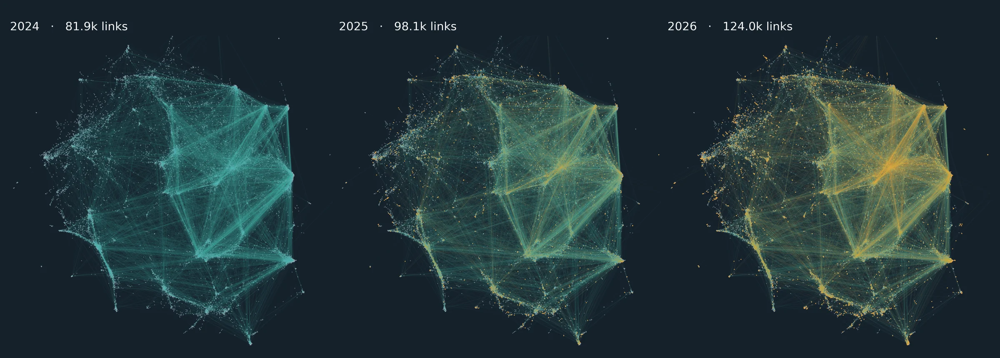
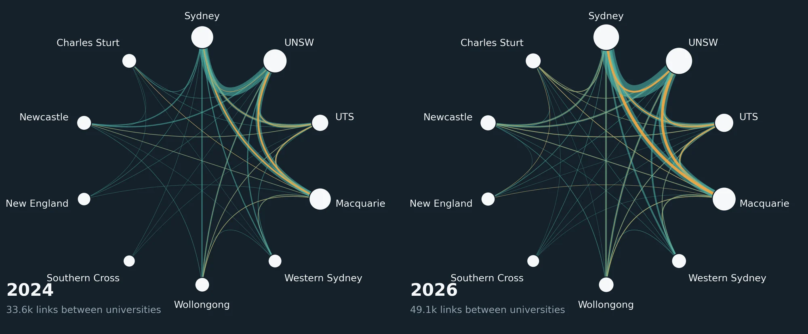

A year of growth in the public ORCID record: who is joining, what they add, and which systems add it for them.
Show the SQL (2 queries)
stats.sql
-- Headline counts: public records in each release, records new since 2025 and gone since 2025, public works.
WITH a AS (SELECT orcid_identifier.path id,
(SELECT COUNT(*) FROM UNNEST(activities.works.groups) g, UNNEST(g.records) r WHERE r.last_modified_date IS NOT NULL) works_records
FROM `ds-open-datasets.orcid.summaries_2025`),
b AS (SELECT orcid_identifier.path id,
(SELECT COUNT(*) FROM UNNEST(activities.works.groups) g, UNNEST(g.records) r WHERE r.last_modified_date IS NOT NULL) works_records
FROM `ds-open-datasets.orcid.summaries_2026`)
SELECT
(SELECT COUNT(*) FROM a) records_2025, (SELECT COUNT(*) FROM b) records_2026,
(SELECT COUNT(*) FROM b LEFT JOIN a USING (id) WHERE a.id IS NULL) new_since_2025,
(SELECT COUNT(*) FROM a LEFT JOIN b USING (id) WHERE b.id IS NULL) gone_since_2025,
(SELECT SUM(works_records) FROM a) work_records_2025, (SELECT SUM(works_records) FROM b) work_records_2026
stats_works.sql
-- Public works per release, counting each grouped work once per record (as the ORCID record displays it).
SELECT '2025' rel, SUM((SELECT COUNT(*) FROM UNNEST(activities.works.groups) g WHERE g.last_modified_date IS NOT NULL)) works
FROM `ds-open-datasets.orcid.summaries_2025`
UNION ALL
SELECT '2026', SUM((SELECT COUNT(*) FROM UNNEST(activities.works.groups) g WHERE g.last_modified_date IS NOT NULL))
FROM `ds-open-datasets.orcid.summaries_2026`
Profile links
LinkedIn and GitHub grow fastest among the big platforms. X/Twitter stalls.
Only 6% of records list any website, a share that has barely moved. Within that group, links to professional and code platforms grew strongly. X/Twitter added just 5% more profiles, and GitHub overtook it.
2025 release2026 release
Public profiles with at least one link to the platform. Platforms with 30,000+ profiles in 2026.
Which links go together
Links cluster. Profiles that list Hugging Face are 21 times as likely as the average linked profile to list GitHub, and 346 times as likely to list Kaggle. Bluesky goes with Mastodon (38×) and Threads (43×). X/Twitter is listed with Hugging Face 4.6 times as often as chance (79 profiles), and with Bluesky 8.7 times (2,017). Researchers linking to Brazil's Lattes CV rarely list X (0.15×) or Bluesky (0.09×). Lift is noisiest for small platforms, where a few profiles that list everything can dominate.
Among the 1.80M 2026 profiles with at least one website. Lift = profiles listing both ÷ the number expected if the two were listed independently. Pairs with fewer than 20 shared profiles are left out.
Show the SQL (3 queries)
urls_platforms.sql
WITH u AS (
SELECT '2025' yr, orcid_identifier.path id, LOWER(TRIM(x.url)) url, LOWER(x.url_name) nm, x.created_date
FROM `ds-open-datasets.orcid.summaries_2025`, UNNEST(person.researcher_urls.urls) x
UNION ALL
SELECT '2026', orcid_identifier.path, LOWER(TRIM(x.url)), LOWER(x.url_name), x.created_date
FROM `ds-open-datasets.orcid.summaries_2026`, UNNEST(person.researcher_urls.urls) x
), h AS (
SELECT *, REGEXP_REPLACE(IFNULL(NET.HOST(IF(REGEXP_CONTAINS(url, r'^[a-z]+://'), url, CONCAT('http://', url))), ''), r'^(www|m|mobile)\.', '') host FROM u
), c AS (
SELECT *, CASE
WHEN host = 'bsky.app' OR ENDS_WITH(host, '.bsky.social') OR host = 'bsky.social' THEN 'Bluesky'
WHEN host IN ('twitter.com','x.com') THEN 'X/Twitter'
WHEN REGEXP_CONTAINS(url, r'/@[a-z0-9_]+/?$') AND NOT REGEXP_CONTAINS(host, r'medium|youtube|tiktok|threads') OR REGEXP_CONTAINS(host, r'^(mastodon\.|fediscience|scholar\.social|mstdn|sciences\.social|ecoevo\.social|hcommons\.social|mas\.to|mathstodon)') THEN 'Mastodon/fediverse'
WHEN host = 'threads.net' OR host = 'threads.com' THEN 'Threads'
WHEN ENDS_WITH(host, 'linkedin.com') THEN 'LinkedIn'
WHEN host = 'scholar.google.com' OR REGEXP_CONTAINS(host, r'^scholar\.google\.') THEN 'Google Scholar'
WHEN host = 'researchgate.net' THEN 'ResearchGate'
WHEN host = 'github.com' OR ENDS_WITH(host, '.github.io') THEN 'GitHub'
WHEN host = 'gitlab.com' THEN 'GitLab'
WHEN ENDS_WITH(host, 'academia.edu') THEN 'Academia.edu'
WHEN host IN ('scopus.com') THEN 'Scopus'
WHEN host IN ('webofscience.com','publons.com','researcherid.com') THEN 'Web of Science/Publons'
WHEN host IN ('facebook.com','fb.com') THEN 'Facebook'
WHEN host = 'instagram.com' THEN 'Instagram'
WHEN host IN ('youtube.com','youtu.be') THEN 'YouTube'
WHEN host = 'tiktok.com' THEN 'TikTok'
WHEN host = 'medium.com' OR ENDS_WITH(host, '.medium.com') THEN 'Medium'
WHEN ENDS_WITH(host, 'substack.com') THEN 'Substack'
WHEN host = 'semanticscholar.org' THEN 'Semantic Scholar'
WHEN host IN ('loop.frontiersin.org') THEN 'Frontiers Loop'
WHEN host IN ('osf.io') THEN 'OSF'
WHEN host IN ('zenodo.org') THEN 'Zenodo'
WHEN host IN ('figshare.com') OR ENDS_WITH(host, '.figshare.com') THEN 'Figshare'
WHEN host IN ('dimensions.ai','app.dimensions.ai') THEN 'Dimensions'
WHEN host IN ('wikipedia.org') OR ENDS_WITH(host, '.wikipedia.org') THEN 'Wikipedia'
WHEN host = 'wikidata.org' THEN 'Wikidata'
WHEN host = 'lattes.cnpq.br' OR host = 'buscatextual.cnpq.br' THEN 'Lattes (Brazil)'
WHEN host = 'kaggle.com' THEN 'Kaggle'
WHEN host = 'huggingface.co' THEN 'Hugging Face'
WHEN host = 'ssrn.com' OR ENDS_WITH(host, '.ssrn.com') THEN 'SSRN'
WHEN host = 'sites.google.com' THEN 'Google Sites'
WHEN host = 'linktr.ee' THEN 'Linktree'
WHEN host = 'mendeley.com' THEN 'Mendeley'
WHEN host = 'arxiv.org' THEN 'arXiv'
WHEN host = 'doi.org' OR host = 'dx.doi.org' THEN 'DOI link'
WHEN host = 'orcid.org' THEN 'ORCID'
WHEN host = '' THEN '(unparseable)'
ELSE 'Other' END platform FROM h
)
SELECT yr, platform, COUNT(DISTINCT id) profiles, COUNT(*) links
FROM c GROUP BY yr, platform
completeness_urls.sqlBacks "only 6% of records list any website": 6.1%, 5.9% and 6.0% in the 2024, 2025 and 2026 releases. Trimmed from a wider record-completeness query to the column used here.
-- Share of public records listing at least one website, in each of the last three releases.
SELECT yr, COUNT(*) profiles,
ROUND(100*COUNTIF((SELECT COUNT(*) FROM UNNEST(person.researcher_urls.urls) z WHERE z.last_modified_date IS NOT NULL) > 0)/COUNT(*),1) pct_urls
FROM (
SELECT '2024' yr, person, activities FROM `ds-open-datasets.orcid.summaries_2024` UNION ALL
SELECT '2025', person, activities FROM `ds-open-datasets.orcid.summaries_2025` UNION ALL
SELECT '2026', person, activities FROM `ds-open-datasets.orcid.summaries_2026`)
GROUP BY yr ORDER BY yr
link_pairs.sql
-- Which link platforms are listed together? Lift = observed profiles listing both / expected if independent,
-- among 2026 profiles with at least one website. Platform rules as in urls_platforms.sql.
WITH u AS (
SELECT '2026' yr, orcid_identifier.path id, LOWER(TRIM(x.url)) url, LOWER(x.url_name) nm, x.created_date
FROM `ds-open-datasets.orcid.summaries_2026`, UNNEST(person.researcher_urls.urls) x
), h AS (
SELECT *, REGEXP_REPLACE(IFNULL(NET.HOST(IF(REGEXP_CONTAINS(url, r'^[a-z]+://'), url, CONCAT('http://', url))), ''), r'^(www|m|mobile)\.', '') host FROM u
), c AS (
SELECT *, CASE
WHEN host = 'bsky.app' OR ENDS_WITH(host, '.bsky.social') OR host = 'bsky.social' THEN 'Bluesky'
WHEN host IN ('twitter.com','x.com') THEN 'X/Twitter'
WHEN REGEXP_CONTAINS(url, r'/@[a-z0-9_]+/?$') AND NOT REGEXP_CONTAINS(host, r'medium|youtube|tiktok|threads') OR REGEXP_CONTAINS(host, r'^(mastodon\.|fediscience|scholar\.social|mstdn|sciences\.social|ecoevo\.social|hcommons\.social|mas\.to|mathstodon)') THEN 'Mastodon/fediverse'
WHEN host = 'threads.net' OR host = 'threads.com' THEN 'Threads'
WHEN ENDS_WITH(host, 'linkedin.com') THEN 'LinkedIn'
WHEN host = 'scholar.google.com' OR REGEXP_CONTAINS(host, r'^scholar\.google\.') THEN 'Google Scholar'
WHEN host = 'researchgate.net' THEN 'ResearchGate'
WHEN host = 'github.com' OR ENDS_WITH(host, '.github.io') THEN 'GitHub'
WHEN host = 'gitlab.com' THEN 'GitLab'
WHEN ENDS_WITH(host, 'academia.edu') THEN 'Academia.edu'
WHEN host IN ('scopus.com') THEN 'Scopus'
WHEN host IN ('webofscience.com','publons.com','researcherid.com') THEN 'Web of Science/Publons'
WHEN host IN ('facebook.com','fb.com') THEN 'Facebook'
WHEN host = 'instagram.com' THEN 'Instagram'
WHEN host IN ('youtube.com','youtu.be') THEN 'YouTube'
WHEN host = 'tiktok.com' THEN 'TikTok'
WHEN host = 'medium.com' OR ENDS_WITH(host, '.medium.com') THEN 'Medium'
WHEN ENDS_WITH(host, 'substack.com') THEN 'Substack'
WHEN host = 'semanticscholar.org' THEN 'Semantic Scholar'
WHEN host IN ('loop.frontiersin.org') THEN 'Frontiers Loop'
WHEN host IN ('osf.io') THEN 'OSF'
WHEN host IN ('zenodo.org') THEN 'Zenodo'
WHEN host IN ('figshare.com') OR ENDS_WITH(host, '.figshare.com') THEN 'Figshare'
WHEN host IN ('dimensions.ai','app.dimensions.ai') THEN 'Dimensions'
WHEN host IN ('wikipedia.org') OR ENDS_WITH(host, '.wikipedia.org') THEN 'Wikipedia'
WHEN host = 'wikidata.org' THEN 'Wikidata'
WHEN host = 'lattes.cnpq.br' OR host = 'buscatextual.cnpq.br' THEN 'Lattes (Brazil)'
WHEN host = 'kaggle.com' THEN 'Kaggle'
WHEN host = 'huggingface.co' THEN 'Hugging Face'
WHEN host = 'ssrn.com' OR ENDS_WITH(host, '.ssrn.com') THEN 'SSRN'
WHEN host = 'sites.google.com' THEN 'Google Sites'
WHEN host = 'linktr.ee' THEN 'Linktree'
WHEN host = 'mendeley.com' THEN 'Mendeley'
WHEN host = 'arxiv.org' THEN 'arXiv'
WHEN host = 'doi.org' OR host = 'dx.doi.org' THEN 'DOI link'
WHEN host = 'orcid.org' THEN 'ORCID'
WHEN host = '' THEN '(unparseable)'
ELSE 'Other' END platform FROM h
)
, p AS (SELECT DISTINCT id, platform FROM c WHERE platform NOT IN ('Other', '(unparseable)')),
n AS (SELECT COUNT(DISTINCT id) tot FROM c),
m AS (SELECT platform, COUNT(*) cnt FROM p GROUP BY 1)
SELECT a.platform pa, b.platform pb, COUNT(*) both_n, ANY_VALUE(ma.cnt) n_a, ANY_VALUE(mb.cnt) n_b, ANY_VALUE(n.tot) tot,
ROUND(COUNT(*) * ANY_VALUE(n.tot) / (ANY_VALUE(ma.cnt) * ANY_VALUE(mb.cnt)), 2) lift
FROM p a JOIN p b ON a.id = b.id AND a.platform < b.platform
JOIN m ma ON ma.platform = a.platform JOIN m mb ON mb.platform = b.platform CROSS JOIN n
GROUP BY 1, 2 HAVING both_n >= 20 ORDER BY lift DESC
Bluesky
Bluesky has a clear signal, but it peaked in November 2024.
6,410 profiles now link to Bluesky, up 40% in a year, but that's still a tenth of X/Twitter. New Bluesky links spiked after the November 2024 US election and have tapered since. Researchers still add X links about 3.5 times as often.
Bluesky links addedX/Twitter links added
Links on 2026 public profiles, by month first added. Links that were later removed are not counted.
Switching, in numbers
3,184 existing profiles dropped their X link this year; 503 of them (16%) now list Bluesky. 1,561 existing profiles added Bluesky, and 131 removed it. 2,017 profiles list both.
Show the SQL (2 queries)
social_timeline.sql
WITH x AS (
SELECT SUBSTR(x.created_date, 1, 7) ym,
REGEXP_REPLACE(IFNULL(NET.HOST(IF(REGEXP_CONTAINS(LOWER(TRIM(x.url)), r'^[a-z]+://'), LOWER(TRIM(x.url)), CONCAT('http://', LOWER(TRIM(x.url))))), ''), r'^(www|m|mobile)\.', '') h
FROM `ds-open-datasets.orcid.summaries_2026`, UNNEST(person.researcher_urls.urls) x)
SELECT ym,
COUNTIF(h = 'bsky.app' OR h = 'bsky.social' OR ENDS_WITH(h, '.bsky.social')) bluesky,
COUNTIF(h IN ('twitter.com','x.com')) x_twitter,
COUNTIF(h = 'x.com') x_dot_com,
COUNTIF(ENDS_WITH(h, 'linkedin.com')) linkedin,
COUNT(*) all_links
FROM x WHERE ym >= '2022-01' GROUP BY ym ORDER BY ym
social_flows.sql
CREATE TEMP FUNCTION plat(url STRING, nm STRING) AS ((
WITH x AS (SELECT LOWER(TRIM(url)) u, REGEXP_REPLACE(IFNULL(NET.HOST(IF(REGEXP_CONTAINS(LOWER(TRIM(url)), r'^[a-z]+://'), LOWER(TRIM(url)), CONCAT('http://', LOWER(TRIM(url))))), ''), r'^(www|m|mobile)\.', '') h)
SELECT CASE
WHEN h = 'bsky.app' OR h = 'bsky.social' OR ENDS_WITH(h, '.bsky.social') THEN 'bluesky'
WHEN REGEXP_CONTAINS(LOWER(IFNULL(nm,'')), r'bluesky|bsky') THEN 'bluesky_custom'
WHEN h IN ('twitter.com','x.com') THEN 'x'
WHEN REGEXP_CONTAINS(LOWER(IFNULL(nm,'')), r'mastodon') OR (REGEXP_CONTAINS(u, r'/@[a-z0-9_]+/?$') AND NOT REGEXP_CONTAINS(h, r'medium|youtube|tiktok|threads')) THEN 'mastodon'
ELSE NULL END FROM x));
WITH p25 AS (SELECT orcid_identifier.path id, ARRAY(SELECT DISTINCT plat(x.url, x.url_name) FROM UNNEST(person.researcher_urls.urls) x WHERE plat(x.url, x.url_name) IS NOT NULL) s FROM `ds-open-datasets.orcid.summaries_2025`),
p26 AS (SELECT orcid_identifier.path id, ARRAY(SELECT DISTINCT plat(x.url, x.url_name) FROM UNNEST(person.researcher_urls.urls) x WHERE plat(x.url, x.url_name) IS NOT NULL) s FROM `ds-open-datasets.orcid.summaries_2026`),
j AS (SELECT p26.id, p25.id IS NOT NULL in25, IFNULL(p25.s, []) a, p26.s b FROM p26 LEFT JOIN p25 USING (id))
SELECT
COUNTIF('bluesky_custom' IN UNNEST(b)) bsky_custom_domain_26,
COUNTIF('bluesky_custom' IN UNNEST(a)) bsky_custom_domain_25,
COUNTIF(in25 AND 'x' IN UNNEST(a) AND 'x' NOT IN UNNEST(b)) x_dropped,
COUNTIF('x' NOT IN UNNEST(a) AND 'x' IN UNNEST(b)) x_added,
COUNTIF(in25 AND 'bluesky' NOT IN UNNEST(a) AND 'bluesky' IN UNNEST(b)) bsky_added_existing,
COUNTIF(NOT in25 AND 'bluesky' IN UNNEST(b)) bsky_on_new_profiles,
COUNTIF(in25 AND 'bluesky' IN UNNEST(a) AND 'bluesky' NOT IN UNNEST(b)) bsky_dropped,
COUNTIF(in25 AND 'x' IN UNNEST(a) AND 'x' NOT IN UNNEST(b) AND 'bluesky' IN UNNEST(b)) x_dropped_and_has_bsky,
COUNTIF('x' IN UNNEST(b) AND 'bluesky' IN UNNEST(b)) both_x_bsky_26,
COUNTIF('bluesky' IN UNNEST(b)) bsky_26,
COUNTIF('mastodon' IN UNNEST(b)) mastodon_26, COUNTIF('mastodon' IN UNNEST(a)) mastodon_25,
COUNTIF(in25 AND 'mastodon' IN UNNEST(a) AND 'mastodon' NOT IN UNNEST(b)) mastodon_dropped,
COUNTIF(in25) existing_profiles, COUNTIF(NOT in25) new_profiles,
(SELECT COUNT(*) FROM `ds-open-datasets.orcid.summaries_2025` WHERE orcid_identifier.path NOT IN (SELECT id FROM p26)) gone_from_2026
FROM j
Employment
Two-thirds of new researchers now record an employer, up from under a fifth.
The share of records with an employment entry rose from 27% (2024) to 36% (2025) and 42% (2026). The jump began with accounts created in February–March 2024, when the share went from 18% to 66% and has stayed there. This matches the ORCID release notes, 23 February 2024, from which new users are prompted to add an employer when they register, either typed in or suggested from their email domain. The step can still be skipped. The ORCID 2025 Annual Report credits these automatic affiliation suggestions and validated email domains with a large rise in records with affiliations (p. 18).
Share of accounts with an employment entry, by month the account was created.
Oct 2024–Oct 2025Oct 2025–Oct 2026
Employment entries added in each release year, by the employer's country.
Who adds them: researchers, overwhelmingly
Of 4.52M employment entries added this year, 4.42M (98%) were entered by researchers themselves, up 26%. Institutional systems added about 96k, two-thirds of them in Europe. Growth in self-entered employment was fastest in South Asia (+40%), Southeast Asia (+38%) and Sub-Saharan Africa (+37%). Institutional entries grew most at Australian and US employers, but much of that is systems recreating entries they had already sent (see drops and churn).
Counts are entries created in each window, not entries on the record. A fall means a system added fewer new entries than the year before, often after a one-off load of existing staff, not that entries were removed. Drops and churn checks this against the 2025 snapshot.
Show the SQL (5 queries)
completeness_employment.sqlBacks the 27% → 36% → 42% share of records with employment (27.4%, 35.5%, 42.1%). Trimmed from a wider record-completeness query to the column used here.
-- Share of public records with at least one employment entry, in each of the last three releases.
SELECT yr, COUNT(*) profiles,
ROUND(100*COUNTIF((SELECT COUNT(*) FROM UNNEST(activities.employments.groups) z WHERE z.last_modified_date IS NOT NULL) > 0)/COUNT(*),1) pct_employment
FROM (
SELECT '2024' yr, person, activities FROM `ds-open-datasets.orcid.summaries_2024` UNION ALL
SELECT '2025', person, activities FROM `ds-open-datasets.orcid.summaries_2025` UNION ALL
SELECT '2026', person, activities FROM `ds-open-datasets.orcid.summaries_2026`)
GROUP BY yr ORDER BY yr
emp_month.sql
SELECT SUBSTR(history.submission_date, 1, 7) ym, COUNT(*) profiles,
ROUND(100*COUNTIF((SELECT COUNT(*) FROM UNNEST(activities.employments.groups) z WHERE z.last_modified_date IS NOT NULL) > 0)/COUNT(*),1) pct_employment
FROM `ds-open-datasets.orcid.summaries_2026`
WHERE history.submission_date BETWEEN '2023-06' AND '2024-09'
GROUP BY 1 ORDER BY 1
emp_by_country.sql
WITH e AS (
SELECT '2025' rel, r.organization.address.country c, r.source.source_orcid.path = t.orcid_identifier.path self
FROM `ds-open-datasets.orcid.summaries_2025` t, UNNEST(t.activities.employments.groups) g, UNNEST(g.records) r
WHERE r.created_date >= '2024-10-14' AND r.created_date < '2025-10-14'
UNION ALL
SELECT '2026', r.organization.address.country, r.source.source_orcid.path = t.orcid_identifier.path
FROM `ds-open-datasets.orcid.summaries_2026` t, UNNEST(t.activities.employments.groups) g, UNNEST(g.records) r
WHERE r.created_date >= '2025-10-14' AND r.created_date < '2026-10-15')
SELECT IFNULL(c, '(none)') country,
COUNTIF(rel='2025') prev_total, COUNTIF(rel='2026') this_total,
COUNTIF(rel='2025' AND NOT IFNULL(self,FALSE)) prev_institutional, COUNTIF(rel='2026' AND NOT IFNULL(self,FALSE)) this_institutional
FROM e GROUP BY 1 ORDER BY this_total DESC
employment_sources.sql
-- Employment records created in the year between snapshots, by who added them.
-- A record whose source is the profile owner (source_orcid = own iD) is self-asserted.
SELECT
CASE WHEN r.source.source_orcid.path = t.orcid_identifier.path THEN '(self-asserted)'
ELSE IFNULL(r.source.source_name, '(unknown)') END added_by,
COUNT(*) records, COUNT(DISTINCT t.orcid_identifier.path) profiles,
APPROX_TOP_COUNT(r.organization.address.country, 3) top_countries
FROM `ds-open-datasets.orcid.summaries_2026` t, UNNEST(t.activities.employments.groups) g, UNNEST(g.records) r
WHERE r.created_date >= '2025-10-14' AND r.created_date < '2026-10-15'
GROUP BY 1 ORDER BY records DESC LIMIT 25
emp_src_years.sql
WITH e AS (
SELECT '2025' rel, IF(r.source.source_orcid.path = t.orcid_identifier.path, 'self', 'integration') kind, IFNULL(r.source.source_name,'?') src
FROM `ds-open-datasets.orcid.summaries_2025` t, UNNEST(t.activities.employments.groups) g, UNNEST(g.records) r
WHERE r.created_date >= '2024-10-14' AND r.created_date < '2025-10-14'
UNION ALL
SELECT '2026', IF(r.source.source_orcid.path = t.orcid_identifier.path, 'self', 'integration'), IFNULL(r.source.source_name,'?')
FROM `ds-open-datasets.orcid.summaries_2026` t, UNNEST(t.activities.employments.groups) g, UNNEST(g.records) r
WHERE r.created_date >= '2025-10-14' AND r.created_date < '2026-10-15')
SELECT IF(kind='self','(self-asserted)',src) src, COUNTIF(rel='2025') prev_year, COUNTIF(rel='2026') this_year
FROM e GROUP BY 1 ORDER BY this_year DESC LIMIT 30
Drops and churn
Falls in institutional employment are one-off loads, not removals. But many systems rewrite what they already sent.
Each employment entry an integration had written by the 2025 snapshot was matched to the 2026 snapshot on iD, source system and created timestamp. ORCID's public file has no per-entry id. Works are stable: 99.4% of works written by integrations survive. Employment is not. Only 84% of the 296k institution- and system-written employment entries in 2025 are still there in 2026 with the same created date.
72%of vanished entries were recreated by the same system, for the same employer35.4k entries
20%actually removed, or made private, with no replacement from that system10.1k entries
8%replaced by the same system with a differently named employer3.9k, mostly Minnesota and LSE
41%of this year's 95.8k institutional employment entries replace an entry the same system had already sent to that researcher39.6k rewrites
The systems whose additions fell each had a single large batch in the previous window. Most of what they wrote is still on the record. The fall is the year after a backfill, and removals are small.
System
Added Oct 24–25
Added Oct 25–26
Peak month (entries)
On record, 2025
Still there, 2026
Recreated
Removed
Aarhus University
5,263
3,217
Jun 2025 (2,123)
6,298
60%
2,489
55
University of Dundee
5,112
1,661
Sep 2025 (3,664)
5,289
73%
1,018
393
University of Southern Denmark
3,572
1,018
Sep 2025 (2,030)
3,865
85%
505
68
University of Oxford
1,367
974
Jul 2025 (1,101)
4,876
97%
6
135
Erasmus University & Erasmus MC
3,638
2,699
Mar 2025 (658)
8,098
88%
883
63
University of Groningen
2,967
2,388
Dec 2024 (893)
5,417
70%
1,455
119
City University of Hong Kong
1,131
955
Jun 2025 (496)
3,147
84%
420
72
What this changes
Year-on-year counts of institutional employment overstate new coverage. Australia is the clearest case. Of 9.4k employment entries Australian systems added this year, 6.0k (64%) replace an entry the same system had already sent to that researcher. Only 3.3k go to researchers the system had never written to, about the same as last year's total. The UK (59% rewrites), Denmark (59%) and the Netherlands (56%) show the same pattern. Researchers' own employment entries are not affected. The pattern points to how some research information systems resync with ORCID, deleting and re-posting entries instead of updating them. This is an inference from the data.
A few systems show the same churn for works: University of Galway CRIS (2% of 12.5k kept), Charles Darwin University (3% of 6.8k), Sheffield (61%) and Carnegie Mellon Elements (62%). Across all integrations, works churn is under 1%.
Show the SQL (4 queries)
drops_emp.sql
-- Did employment entries written by integrations survive from the 2025 to the 2026 snapshot?
-- No per-entry id is stored, so entries are matched on (iD, source client, created timestamp).
WITH prev AS (
SELECT t.orcid_identifier.path id, r.source.source_client_id.path client, ANY_VALUE(r.source.source_name) src, r.created_date cd
FROM `ds-open-datasets.orcid.summaries_2025` t, UNNEST(t.activities.employments.groups) g, UNNEST(g.records) r
WHERE r.source.source_client_id.path IS NOT NULL
GROUP BY 1, 2, 4
), cur AS (
SELECT DISTINCT t.orcid_identifier.path id, r.source.source_client_id.path client, r.created_date cd
FROM `ds-open-datasets.orcid.summaries_2026` t, UNNEST(t.activities.employments.groups) g, UNNEST(g.records) r
WHERE r.source.source_client_id.path IS NOT NULL
), ids AS (SELECT DISTINCT orcid_identifier.path id FROM `ds-open-datasets.orcid.summaries_2026`)
SELECT p.client, ANY_VALUE(p.src) source_name, COUNT(*) in_2025,
COUNTIF(c.id IS NOT NULL) still_there,
COUNTIF(c.id IS NULL AND i.id IS NOT NULL) gone_record_public,
COUNTIF(i.id IS NULL) gone_record_not_public,
COUNTIF(p.cd >= '2024-10-14') in_2025_added_last_window,
COUNTIF(p.cd >= '2024-10-14' AND c.id IS NULL) gone_added_last_window
FROM prev p
LEFT JOIN cur c ON c.id = p.id AND c.client = p.client AND c.cd = p.cd
LEFT JOIN ids i ON i.id = p.id
GROUP BY 1 HAVING in_2025 >= 300 ORDER BY in_2025 DESC
drops_replace.sql
-- For employment entries written by integrations: were "gone" entries replaced by a new entry from the same system
-- (delete-and-recreate), and how many of this year's additions are rewrites for researchers the system already covered?
WITH prev AS (
SELECT t.orcid_identifier.path id, r.source.source_client_id.path client, r.source.source_name src, r.created_date cd,
LOWER(r.organization.name) org
FROM `ds-open-datasets.orcid.summaries_2025` t, UNNEST(t.activities.employments.groups) g, UNNEST(g.records) r
WHERE r.source.source_client_id.path IS NOT NULL
), cur AS (
SELECT t.orcid_identifier.path id, r.source.source_client_id.path client, r.source.source_name src, r.created_date cd,
LOWER(r.organization.name) org
FROM `ds-open-datasets.orcid.summaries_2026` t, UNNEST(t.activities.employments.groups) g, UNNEST(g.records) r
WHERE r.source.source_client_id.path IS NOT NULL
), ids AS (SELECT DISTINCT orcid_identifier.path id FROM `ds-open-datasets.orcid.summaries_2026`),
pk AS (SELECT DISTINCT id, client, cd FROM prev), ck AS (SELECT DISTINCT id, client, cd FROM cur),
pc AS (SELECT DISTINCT id, client FROM prev), cc AS (SELECT DISTINCT id, client FROM cur),
pco AS (SELECT DISTINCT id, client, org FROM prev), cco AS (SELECT DISTINCT id, client, org FROM cur),
gone AS (
SELECT p.client, p.src,
CASE WHEN i.id IS NULL THEN 'record_not_public'
WHEN cco.id IS NOT NULL THEN 'recreated_same_org'
WHEN cc.id IS NOT NULL THEN 'system_still_writes_other_org'
ELSE 'removed' END fate
FROM prev p
LEFT JOIN ck ON ck.id = p.id AND ck.client = p.client AND ck.cd = p.cd
LEFT JOIN ids i ON i.id = p.id
LEFT JOIN cc ON cc.id = p.id AND cc.client = p.client
LEFT JOIN cco ON cco.id = p.id AND cco.client = p.client AND cco.org = p.org
WHERE ck.id IS NULL
), added AS (
SELECT c.client, c.src, IF(pc.id IS NULL, 'new_researcher', 'researcher_already_covered') kind
FROM cur c LEFT JOIN pc ON pc.id = c.id AND pc.client = c.client
WHERE c.cd >= '2025-10-14' AND c.cd < '2026-10-15'
)
SELECT client, ANY_VALUE(src) source_name, 'gone' part, fate k, COUNT(*) n FROM gone GROUP BY 1, 3, 4
UNION ALL
SELECT client, ANY_VALUE(src), 'added_this_window', kind, COUNT(*) FROM added GROUP BY 1, 3, 4
drops_month.sql
-- Monthly employment entries created by the systems whose additions fell, as seen in the 2026 snapshot.
SELECT r.source.source_name src, FORMAT_DATE('%Y-%m', DATE(r.created_date)) month, COUNT(*) n
FROM `ds-open-datasets.orcid.summaries_2026` t, UNNEST(t.activities.employments.groups) g, UNNEST(g.records) r
WHERE r.created_date >= '2024-10-14' AND r.created_date < '2026-10-15'
AND r.source.source_name IN ('Aarhus University', 'University of Dundee', 'University of Southern Denmark', 'University of Oxford',
'EUR & Erasmus MC Research Information Portal Pure', 'University of Groningen', 'City University of Hong Kong')
GROUP BY 1, 2 ORDER BY 1, 2
drops_works.sql
-- Did works written by integrations survive from the 2025 to the 2026 snapshot?
-- No per-entry id is stored, so entries are matched on (iD, source client, created timestamp).
WITH prev AS (
SELECT t.orcid_identifier.path id, r.source.source_client_id.path client, ANY_VALUE(r.source.source_name) src, r.created_date cd
FROM `ds-open-datasets.orcid.summaries_2025` t, UNNEST(t.activities.works.groups) g, UNNEST(g.records) r
WHERE r.source.source_client_id.path IS NOT NULL
GROUP BY 1, 2, 4
), cur AS (
SELECT DISTINCT t.orcid_identifier.path id, r.source.source_client_id.path client, r.created_date cd
FROM `ds-open-datasets.orcid.summaries_2026` t, UNNEST(t.activities.works.groups) g, UNNEST(g.records) r
WHERE r.source.source_client_id.path IS NOT NULL
), ids AS (SELECT DISTINCT orcid_identifier.path id FROM `ds-open-datasets.orcid.summaries_2026`)
SELECT p.client, ANY_VALUE(p.src) source_name, COUNT(*) in_2025,
COUNTIF(c.id IS NOT NULL) still_there,
COUNTIF(c.id IS NULL AND i.id IS NOT NULL) gone_record_public,
COUNTIF(i.id IS NULL) gone_record_not_public,
COUNTIF(p.cd >= '2024-10-14') in_2025_added_last_window,
COUNTIF(p.cd >= '2024-10-14' AND c.id IS NULL) gone_added_last_window
FROM prev p
LEFT JOIN cur c ON c.id = p.id AND c.client = p.client AND c.cd = p.cd
LEFT JOIN ids i ON i.id = p.id
GROUP BY 1 HAVING in_2025 >= 5000 ORDER BY in_2025 DESC
Works
Web of Science went from a minor source of works to a major one.
145M works are now public, up 23M in a year. Journal articles added in the year rose 57%. The largest single change is Clarivate: Web of Science and its researcher-profile and sign-on services added about 5.0M works, up from 161k the year before.
Oct 2024–Oct 2025Oct 2025–Oct 2026
Work records added in each release year, by the system that added them. "Self-entered" means the researcher's own iD is the source. A work that reaches a researcher's record from three systems counts three times, once per system.
Researcher Profile Sync (old client)Web of Science (new client)Researcher Profiles / Clarivate SSO (new client)
Works added per month by each Clarivate client, as seen in the 2026 file. "Researcher Profiles" and "Clarivate SSO" are two names on one client.
Why: Clarivate rebuilt its ORCID connection in late 2025
In September–October 2025 the old "Web of Science Researcher Profile Sync" client fell from about 55k works a month to about 4k. Two new clients started at the same moment. Together they now add about 430k works a month, seven times the old rate. This matches Clarivate's "revised ORCID connection", which asked existing users to re-grant wider permissions through ORCID sign-in or profile sync. The deck says 341k users synced only for profile purposes would lose auto-sync unless they re-authenticated (Clarivate training deck, December 2025, slides 12–13). The ORCID 2025 Annual Report does not mention it.
The new clients mostly send researchers' existing publication lists rather than new papers. 51% of Web of Science's works this year were published before 2020. About half (52–62%) were already on the record from another source, but only 3–10% duplicate an entry from the old Clarivate client. So this is mostly new coverage of the same researchers' back catalogues, plus Clarivate as an extra source on works ORCID already had. The deck does not give a launch date, so the link between the two is an inference from the timing.
Show the SQL (3 queries)
work_sources.sql
WITH w AS (
SELECT '2025' rel, IF(r.source.source_orcid.path = t.orcid_identifier.path, '(self-entered)', IFNULL(r.source.source_name, '(unknown)')) src, r.type = 'preprint' is_pre
FROM `ds-open-datasets.orcid.summaries_2025` t, UNNEST(t.activities.works.groups) g, UNNEST(g.records) r
WHERE r.created_date >= '2024-10-14' AND r.created_date < '2025-10-14'
UNION ALL
SELECT '2026', IF(r.source.source_orcid.path = t.orcid_identifier.path, '(self-entered)', IFNULL(r.source.source_name, '(unknown)')), r.type = 'preprint'
FROM `ds-open-datasets.orcid.summaries_2026` t, UNNEST(t.activities.works.groups) g, UNNEST(g.records) r
WHERE r.created_date >= '2025-10-14' AND r.created_date < '2026-10-15')
SELECT src, COUNTIF(rel='2025') prev_year, COUNTIF(rel='2026') this_year,
COUNTIF(rel='2026' AND is_pre) preprints_this_year, COUNTIF(rel='2025' AND is_pre) preprints_prev_year
FROM w GROUP BY src ORDER BY this_year DESC LIMIT 15
work_types.sql
WITH w AS (
SELECT '2025' rel, r.type FROM `ds-open-datasets.orcid.summaries_2025` t, UNNEST(t.activities.works.groups) g, UNNEST(g.records) r
WHERE r.created_date >= '2024-10-14' AND r.created_date < '2025-10-14'
UNION ALL
SELECT '2026', r.type FROM `ds-open-datasets.orcid.summaries_2026` t, UNNEST(t.activities.works.groups) g, UNNEST(g.records) r
WHERE r.created_date >= '2025-10-14' AND r.created_date < '2026-10-15')
SELECT type, COUNTIF(rel='2025') added_prev_year, COUNTIF(rel='2026') added_this_year,
ROUND(100*(COUNTIF(rel='2026')-COUNTIF(rel='2025'))/NULLIF(COUNTIF(rel='2025'),0)) pct_change
FROM w GROUP BY type ORDER BY added_this_year DESC LIMIT 20
clarivate.sql
-- Works added Oct 2025 - Oct 2026 by Clarivate sources: when, how old, and whether the same work was already
-- on the record from another source (another record in the same ORCID work group).
WITH w AS (
SELECT r.source.source_name src, r.source.source_client_id.path client, SUBSTR(r.created_date, 1, 7) ym,
SAFE_CAST(r.publication_date.year AS INT64) py,
(SELECT COUNT(*) FROM UNNEST(g.records) o WHERE IFNULL(o.source.source_client_id.path, '') != IFNULL(r.source.source_client_id.path, '')) other_recs,
(SELECT COUNT(*) FROM UNNEST(g.records) o WHERE o.source.source_name IN ('Web of Science Researcher Profile Sync', 'ResearcherID', 'Publons')
AND IFNULL(o.source.source_client_id.path, '') != IFNULL(r.source.source_client_id.path, '')) old_clarivate_recs
FROM `ds-open-datasets.orcid.summaries_2026` t, UNNEST(t.activities.works.groups) g, UNNEST(g.records) r
WHERE r.created_date >= '2024-10-14' AND r.created_date < '2026-10-15'
AND REGEXP_CONTAINS(r.source.source_name, r'(?i)web of science|clarivate|researcherid|publons'))
SELECT src, client, ym, COUNT(*) n, COUNTIF(other_recs > 0) already_from_other, COUNTIF(old_clarivate_recs > 0) already_from_old_clarivate,
COUNTIF(py < 2020) pub_pre2020, COUNTIF(py >= 2025) pub_2025plus
FROM w GROUP BY 1, 2, 3 ORDER BY 1, 3
DataCite
DataCite adds more, and researchers increasingly claim through it themselves.
DataCite reaches ORCID in two ways. Its automatic update, which fires when a DOI's metadata carries an ORCID iD, grew 46%. Its search-and-link tool, where researchers claim works themselves, grew about tenfold. That tool has also been renamed in the data: it was "DataCite - Search & Link Wizard" and now appears as "DataCite" with the researcher as the asserting party.
DataCite preprints rose eightfold (2.6k to 20.5k), and conference presentations appear for the first time (4.1k). Datasets and software are still mostly added by DataCite itself. Self-entered software tripled, from 3.7k to 11.2k.
Show the SQL
datacite.sql
WITH w AS (
SELECT '2025' rel, r.type, IFNULL(r.source.source_name,'?') src, r.source.source_client_id.path client,
r.source.source_orcid.path = t.orcid_identifier.path self, r.source.assertion_origin_name origin
FROM `ds-open-datasets.orcid.summaries_2025` t, UNNEST(t.activities.works.groups) g, UNNEST(g.records) r
WHERE r.created_date >= '2024-10-14' AND r.created_date < '2025-10-14'
UNION ALL
SELECT '2026', r.type, IFNULL(r.source.source_name,'?'), r.source.source_client_id.path,
r.source.source_orcid.path = t.orcid_identifier.path, r.source.assertion_origin_name
FROM `ds-open-datasets.orcid.summaries_2026` t, UNNEST(t.activities.works.groups) g, UNNEST(g.records) r
WHERE r.created_date >= '2025-10-14' AND r.created_date < '2026-10-15')
SELECT 'by_datacite_client' section, CONCAT(src, ' [', IFNULL(client,'-'), ']', IF(origin IS NOT NULL, ' on behalf of user', '')) k, type,
COUNTIF(rel='2025') prev_year, COUNTIF(rel='2026') this_year
FROM w WHERE LOWER(src) LIKE '%datacite%' GROUP BY 1,2,3
UNION ALL
SELECT 'datasets_software_by_source', IF(self, '(self-entered)', src), type, COUNTIF(rel='2025'), COUNTIF(rel='2026')
FROM w WHERE type IN ('data-set','software') GROUP BY 1,2,3
Who writes to ORCID
Indexes doubled their contribution. Institutions grew 19%, mostly in Europe and Australia.
Each of the 838 systems that added works or employment this year was classified from its name, using rules for known services, then name patterns (university, hospital, institute, CRIS, Pure, Symplectic Elements, IRIS, journal, OJS, repository). 99.98% of additions fall into a named class. An institution's country is inferred, because ORCID does not record where an integration is based. See the note on country below.
For scale, the ORCID 2025 Annual Report counts 23.3M items added in calendar 2025 by 708 integrations run by 856 members (p. 5). That figure covers all item types and includes private items, over a calendar year. The 838 here count every source system that added public works or employment between October 2025 and October 2026, and ORCID may group clients into integrations differently.
Oct 2024–Oct 2025Oct 2025–Oct 2026
Works added by each type of source system, excluding self-entered works. Crossref and DataCite automatic updates are counted as registration agencies.
Oct 2024–Oct 2025Oct 2025–Oct 2026
Works added by institutions' systems, top 12 countries.
Institutional integrations are a European and Australian story
Of 2.50M works pushed by institutions this year, 68% came from European systems, 14.5% from Oceania and 13% from North America. Asia, Latin America, Africa and the Middle East together contributed under 4%, even though about two-thirds of this year's new employment entries are at employers in those regions.
Australia's institutions nearly doubled their output (185k to 357k works). Ireland went from 30k to 105k, Canada from 18k to 60k and Czechia from 35k to 88k. Italy's IRIS-based systems fell 17%.
The full lookup (838 systems, class, subclass, country) is in data/source_classes.csv in the repository.
Australia: a one-off backfill on top of a steady flow
Australian institutional systems pushed 172k more works than the year before. About 165k of that came from four universities loading researchers' past publications. Each pushed dozens of works per researcher, about half published before 2020, concentrated in one or two months. About half were already on the record from another source, so they add the university as a source rather than a new publication.
System
Works Oct 24–25
Works Oct 25–26
Researchers
Works each
Published pre-2020
Peak
University of Sydney Profile Manager
0
84,679
982
86
49%
Oct 2025 – Jan 2026
University of Queensland
4,382
60,645
1,600
38
45%
Nov 2025
UniSC Research Bank
3,390
19,695
606
33
49%
Nov 2025
University of Newcastle
1,693
9,701
248
39
53%
Jun 2026
The steady flow looks different. Macquarie (74% of works published 2025 or later), QUT (53%), UWA (52%) and Flinders (46%) mainly push recent publications at about last year's volume. Employment entries from Australian systems appear to nearly triple (3.6k to 9.4k), led by Macquarie, QUT, ANU, UWA and Flinders. This is mostly not new coverage. 64% of them replace an entry the same system had already sent to that researcher, so new coverage is about 3.3k. See drops and churn.
Show the SQL (3 queries)
source_names.sqlSource names are then classified by classify_sources.py (name rules); see the method notes.
WITH w AS (
SELECT '2025' rel, 'works' kind, r.source.source_name nm, r.source.source_client_id.path cid, r.source.source_orcid.path = t.orcid_identifier.path self
FROM `ds-open-datasets.orcid.summaries_2025` t, UNNEST(t.activities.works.groups) g, UNNEST(g.records) r
WHERE r.created_date >= '2024-10-14' AND r.created_date < '2025-10-14'
UNION ALL
SELECT '2026', 'works', r.source.source_name, r.source.source_client_id.path, r.source.source_orcid.path = t.orcid_identifier.path
FROM `ds-open-datasets.orcid.summaries_2026` t, UNNEST(t.activities.works.groups) g, UNNEST(g.records) r
WHERE r.created_date >= '2025-10-14' AND r.created_date < '2026-10-15'
UNION ALL
SELECT '2025', 'employment', r.source.source_name, r.source.source_client_id.path, r.source.source_orcid.path = t.orcid_identifier.path
FROM `ds-open-datasets.orcid.summaries_2025` t, UNNEST(t.activities.employments.groups) g, UNNEST(g.records) r
WHERE r.created_date >= '2024-10-14' AND r.created_date < '2025-10-14'
UNION ALL
SELECT '2026', 'employment', r.source.source_name, r.source.source_client_id.path, r.source.source_orcid.path = t.orcid_identifier.path
FROM `ds-open-datasets.orcid.summaries_2026` t, UNNEST(t.activities.employments.groups) g, UNNEST(g.records) r
WHERE r.created_date >= '2025-10-14' AND r.created_date < '2026-10-15')
SELECT cid client_id, ANY_VALUE(nm) source_name, COUNT(DISTINCT nm) n_names,
COUNTIF(kind='works' AND rel='2025') works_prev, COUNTIF(kind='works' AND rel='2026') works_this,
COUNTIF(kind='employment' AND rel='2025') emp_prev, COUNTIF(kind='employment' AND rel='2026') emp_this
FROM w WHERE NOT IFNULL(self, FALSE) GROUP BY cid
source_country.sql
WITH prof AS (
SELECT t.orcid_identifier.path id,
(SELECT r.organization.address.country FROM UNNEST(t.activities.employments.groups) g, UNNEST(g.records) r WHERE r.organization.address.country IS NOT NULL LIMIT 1) c
FROM `ds-open-datasets.orcid.summaries_2026` t),
emp AS (
SELECT r.source.source_client_id.path cid, r.organization.address.country c
FROM `ds-open-datasets.orcid.summaries_2026` t, UNNEST(t.activities.employments.groups) g, UNNEST(g.records) r
WHERE r.source.source_client_id.path IS NOT NULL),
wk AS (
SELECT r.source.source_client_id.path cid, t.orcid_identifier.path id
FROM `ds-open-datasets.orcid.summaries_2026` t, UNNEST(t.activities.works.groups) g, UNNEST(g.records) r
WHERE r.created_date >= '2025-10-14' AND r.source.source_client_id.path IS NOT NULL),
e AS (SELECT cid, APPROX_TOP_COUNT(c, 1)[OFFSET(0)] top, COUNT(c) n FROM emp WHERE c IS NOT NULL GROUP BY cid),
w AS (SELECT cid, APPROX_TOP_COUNT(p.c, 1)[OFFSET(0)] top, COUNT(p.c) n FROM wk JOIN prof p USING (id) WHERE p.c IS NOT NULL GROUP BY cid)
SELECT COALESCE(e.cid, w.cid) client_id,
e.top.value emp_country, ROUND(e.top.count / e.n, 3) emp_share, e.n emp_n,
w.top.value works_profile_country, ROUND(w.top.count / w.n, 3) works_share, w.n works_n
FROM e FULL JOIN w ON e.cid = w.cid
au_detail.sqlUses the classification table built from source_names.sql and classify_sources.py.
WITH au AS (SELECT client_id, source_name FROM `your-project.your_dataset.orcid_source_classes`
WHERE country = 'AU' AND source_class LIKE 'Institution%'),
w AS (
SELECT au.source_name, t.orcid_identifier.path id, SAFE_CAST(r.publication_date.year AS INT64) py, SUBSTR(r.created_date, 1, 7) ym,
(SELECT COUNT(*) FROM UNNEST(g.records) o WHERE IFNULL(o.source.source_client_id.path, o.source.source_orcid.path) != r.source.source_client_id.path) other_recs,
EXISTS(SELECT 1 FROM UNNEST(r.external_ids.identifiers) i WHERE i.type = 'doi') has_doi
FROM `ds-open-datasets.orcid.summaries_2026` t, UNNEST(t.activities.works.groups) g, UNNEST(g.records) r
JOIN au ON au.client_id = r.source.source_client_id.path
WHERE r.created_date >= '2025-10-14' AND r.created_date < '2026-10-15')
SELECT source_name, COUNT(*) works, COUNT(DISTINCT id) researchers,
ROUND(100*COUNTIF(py >= 2025)/COUNT(*)) pct_pub_2025_on, ROUND(100*COUNTIF(py < 2020)/COUNT(*)) pct_pub_pre2020,
ROUND(100*COUNTIF(other_recs = 0)/COUNT(*)) pct_only_source, ROUND(100*COUNTIF(has_doi)/COUNT(*)) pct_doi,
APPROX_TOP_COUNT(ym, 3) top_months
FROM w GROUP BY 1 ORDER BY works DESC LIMIT 12
Self-entered works
Researchers entered 7.0M works by hand this year, up 45%.
Self-entered works are records the researcher added themselves. 36% of them have no DOI. Of the 4.49M with a DOI, 84% (3.75M) have no copy from any other source on that researcher's record. For those, no integration delivered the work. The other 734k sit alongside an integration's copy. For the rest, the DOI prefix shows which publishers leave the most work to researchers. A low Crossref auto-update share for a large publisher suggests its Crossref deposits rarely carry ORCID iDs.
Where the rest came from
Each source is grouped by type using the classification below. For most large publishers, index and discovery services account for 40–57% of this year's work records, nearly all of them from Scopus and Web of Science. That is more than Crossref auto-update. A paper sent by several systems counts once for each, so these shares describe where this year's records came from, not which system first delivered each paper. These are researcher-authorised syncs: the researcher connects the service once and it then pushes works. Institutions' research information systems delivered 5–17%, highest for BMJ (17%), Oxford University Press (12%) and Taylor & Francis and SAGE (10%). MDPI is the only publisher pushing works itself at scale (36%). Frontiers gets nothing from Crossref auto-update: indexes deliver 57% of its works and researchers enter a third.
Share of work records created Oct 2025–Oct 2026 with each publisher's DOIs, by the system that sent them. Counts are records, not distinct papers. A paper on a researcher's record from Scopus, Web of Science and Crossref counts once for each, and a paper counts again on each co-author's record. Records sent before this window are not counted. Index and discovery services include Europe PMC, INSPIRE-HEP, NASA ADS, OpenAIRE and The Lens as well as Scopus and Web of Science.
Prefixes grouped by registrant name from the Crossref and DataCite APIs. "Self share" and "auto-update share" are shares of this year's work records for the publisher, counted the same way as the chart below (n/a for DataCite-registered DOIs). Only the 400 prefixes with the most self-entered works are included, so totals are slight undercounts.
Show the SQL (5 queries)
self_overlap.sql
-- Self-entered work records created Oct 2025 - Oct 2026: how many sit in a work group that also has a record
-- from another source (so an integration sent the same work too), with and without a DOI.
SELECT
EXISTS(SELECT 1 FROM UNNEST(r.external_ids.identifiers) i WHERE i.type = 'doi') has_doi,
COUNT(*) self_records,
COUNTIF(EXISTS(SELECT 1 FROM UNNEST(g.records) o
WHERE IFNULL(o.source.source_orcid.path, '') != t.orcid_identifier.path)) also_from_other_source
FROM `ds-open-datasets.orcid.summaries_2026` t, UNNEST(t.activities.works.groups) g, UNNEST(g.records) r
WHERE r.created_date >= '2025-10-14' AND r.created_date < '2026-10-15'
AND r.source.source_orcid.path = t.orcid_identifier.path
GROUP BY 1
self_prefix.sqlDOI prefixes are then named from the Crossref and DataCite APIs by prefix_names.py.
WITH w AS (
SELECT IF(r.source.source_orcid.path = t.orcid_identifier.path, 'self', IF(r.source.source_name = 'Crossref', 'crossref', 'other')) kind,
(SELECT REGEXP_EXTRACT(LOWER(IFNULL(i.normalized, i.value)), r'(10\.\d{4,9})/') FROM UNNEST(r.external_ids.identifiers) i WHERE i.type = 'doi' LIMIT 1) prefix
FROM `ds-open-datasets.orcid.summaries_2026` t, UNNEST(t.activities.works.groups) g, UNNEST(g.records) r
WHERE r.created_date >= '2025-10-14' AND r.created_date < '2026-10-15')
SELECT IFNULL(prefix, '(no DOI)') prefix, COUNTIF(kind='self') self_entered, COUNTIF(kind='crossref') crossref_auto, COUNTIF(kind='other') other_integrations, COUNT(*) total
FROM w GROUP BY 1 ORDER BY self_entered DESC LIMIT 400
self_prefix_prev.sql
WITH w AS (
SELECT IF(r.source.source_orcid.path = t.orcid_identifier.path, 'self', IF(r.source.source_name = 'Crossref', 'crossref', 'other')) kind,
(SELECT REGEXP_EXTRACT(LOWER(IFNULL(i.normalized, i.value)), r'(10\.\d{4,9})/') FROM UNNEST(r.external_ids.identifiers) i WHERE i.type = 'doi' LIMIT 1) prefix
FROM `ds-open-datasets.orcid.summaries_2025` t, UNNEST(t.activities.works.groups) g, UNNEST(g.records) r
WHERE r.created_date >= '2024-10-14' AND r.created_date < '2025-10-14')
SELECT IFNULL(prefix, '(no DOI)') prefix, COUNTIF(kind='self') self_entered, COUNTIF(kind='crossref') crossref_auto, COUNTIF(kind='other') other_integrations, COUNT(*) total
FROM w GROUP BY 1 ORDER BY self_entered DESC LIMIT 400
other_sources.sql
WITH w AS (
SELECT IFNULL(r.source.source_name, '(unknown)') src,
(SELECT REGEXP_EXTRACT(LOWER(IFNULL(i.normalized, i.value)), r'(10\.\d{4,9})/') FROM UNNEST(r.external_ids.identifiers) i WHERE i.type = 'doi' LIMIT 1) prefix
FROM `ds-open-datasets.orcid.summaries_2026` t, UNNEST(t.activities.works.groups) g, UNNEST(g.records) r
WHERE r.created_date >= '2025-10-14' AND r.created_date < '2026-10-15'
AND IFNULL(r.source.source_orcid.path, '') != t.orcid_identifier.path
AND IFNULL(r.source.source_name, '') != 'Crossref')
SELECT prefix, src, COUNT(*) n FROM w WHERE prefix IN ('10.1002','10.1006','10.1007','10.1016','10.1021','10.1023','10.1038','10.1039','10.1046','10.1053','10.1057','10.1080','10.1088','10.1093','10.1096','10.1097','10.1101','10.1103','10.1109','10.1111','10.1112','10.1113','10.1136','10.1140','10.1161','10.1177','10.1186','10.1201','10.1208','10.1212','10.1213','10.1227','10.1245','10.1249','10.13140','10.1371','10.14309','10.14814','10.1519','10.1557','10.1681','10.18429','10.20944','10.2106','10.2139','10.2147','10.23919','10.26434','10.2903','10.3109','10.3389','10.3390','10.3758','10.3760','10.4135','10.4161','10.4324','10.48550','10.5281') GROUP BY 1, 2 HAVING n >= 50
pub_mix_class.sql
WITH w AS (
SELECT r.source.source_client_id.path cid, r.source.source_orcid.path = t.orcid_identifier.path self,
(SELECT REGEXP_EXTRACT(LOWER(IFNULL(i.normalized, i.value)), r'(10\.\d{4,9})/') FROM UNNEST(r.external_ids.identifiers) i WHERE i.type = 'doi' LIMIT 1) prefix
FROM `ds-open-datasets.orcid.summaries_2026` t, UNNEST(t.activities.works.groups) g, UNNEST(g.records) r
WHERE r.created_date >= '2025-10-14' AND r.created_date < '2026-10-15')
SELECT prefix,
CASE WHEN IFNULL(self, FALSE) THEN 'Self-entered'
WHEN c.source_name = 'Crossref' THEN 'Crossref auto-update'
ELSE IFNULL(c.source_subclass, 'Other / unclassified') END cls,
COUNT(*) n
FROM w LEFT JOIN `your-project.your_dataset.orcid_source_classes` c ON c.client_id = w.cid
WHERE prefix IN ('10.1002','10.1006','10.1007','10.1016','10.1021','10.1023','10.1038','10.1039','10.1046','10.1053','10.1057','10.1080','10.1088','10.1093','10.1096','10.1097','10.1101','10.1103','10.1109','10.1111','10.1112','10.1113','10.1136','10.1140','10.1161','10.1177','10.1186','10.1201','10.1208','10.1212','10.1213','10.1227','10.1245','10.1249','10.13140','10.1371','10.14309','10.14814','10.1519','10.1557','10.1681','10.18429','10.20944','10.2106','10.2139','10.2147','10.23919','10.26434','10.2903','10.3109','10.3389','10.3390','10.3758','10.3760','10.4135','10.4161','10.4324','10.48550','10.5281') GROUP BY 1, 2
Method and caveats
Source: ORCID Public Data File 2026 (snapshot of 14 October 2026) and 2025, loaded to BigQuery from the summaries XML. Only public data is included, so all counts are lower bounds.
What is counted. The 145.1M headline counts each work once per record, as the ORCID record displays it. Every other works figure counts work records: one per source per researcher. A paper sent to a researcher by Scopus and Crossref counts twice, and a paper with five ORCID-holding co-authors counts on each of their records.
"Release year" windows run 14 Oct–14 Oct and use each item's created date as reported by ORCID.
1,159,821 files in the 2026 snapshot are ORCID placeholders for locked, deprecated or deactivated records and contain no data.
Bluesky counts use bsky.app and *.bsky.social links, plus links labelled "Bluesky". Custom-domain handles without a label are missed.
Entries are matched between snapshots on iD, source system (client id) and created timestamp, as the public file has no per-entry id. "Removed" includes entries made private: the public file can't tell them apart. "Recreated" means the same system has an entry for the same researcher and employer with a later created date.
Comparison with ORCID's own figures. The ORCID 2025 Annual Report reports 8.9M records updated, 10.6M researchers actively engaged and 23.3M items added via integrations in calendar 2025 (p. 5). Those counts include private data and use calendar years, so they run higher than, and are not directly comparable with, counts from the public file.
Self-entered = the item's source is the record owner's own iD. That includes works added through ORCID's own add-by-DOI tool.
The 2024 registration change is documented in the ORCID release notes, 23 February 2024. Later releases expanded the email-domain suggestions (January 2025, March and May 2026) and added a sign-in prompt for existing users with no employer (May 2025).
Country of an institutional system is inferred, as ORCID does not record it. For 72.5% of institutional volume it is the country of the employers in the employment entries the system itself wrote. Those come from ORCID's organisation picker, and within a system they agree a median 100% of the time. For 27.4% (systems that write works but no employment) it is the employer country on the first employment entry of the researchers it writes to, a weaker signal that depends on researchers having a public employer. A system needs 5+ employment entries with 60%+ in one country, or 20+ such researchers with 50%+ in one country. 0.1% of volume gets no country. All 268 systems whose names identify a country were assigned that country.
Country of a researcher or employment entry comes from the employer recorded on public employment entries. A third of new researchers, and 59% of older ones, have no public employer and are left out. Because new researchers have a country far more often (after the 2024 registration change), compare country shares only among records with a known country.
Show the SQL (2 queries)
cohorts.sql
SELECT SUBSTR(history.submission_date, 1, 4) created_year, COUNT(*) profiles,
ROUND(100*COUNTIF((SELECT COUNT(*) FROM UNNEST(activities.employments.groups) z WHERE z.last_modified_date IS NOT NULL) > 0)/COUNT(*),1) pct_employment,
ROUND(100*COUNTIF((SELECT COUNT(*) FROM UNNEST(activities.works.groups) z WHERE z.last_modified_date IS NOT NULL) > 0)/COUNT(*),1) pct_works,
ROUND(100*COUNTIF((SELECT COUNT(*) FROM UNNEST(person.researcher_urls.urls) z WHERE z.last_modified_date IS NOT NULL) > 0)/COUNT(*),1) pct_urls,
ROUND(100*COUNTIF(SUBSTR(history.last_modified_date,1,10) >= '2025-10-14')/COUNT(*),1) pct_touched_last_year
FROM `ds-open-datasets.orcid.summaries_2026`
GROUP BY 1 ORDER BY 1
new_countries.sql
WITH n AS (
SELECT t.orcid_identifier.path id,
(SELECT r.organization.address.country FROM UNNEST(t.activities.employments.groups) g, UNNEST(g.records) r LIMIT 1) emp_country,
(SELECT a.country FROM UNNEST(t.person.addresses.addresses) a LIMIT 1) addr_country,
SUBSTR(t.history.submission_date, 1, 10) >= '2025-10-14' is_new
FROM `ds-open-datasets.orcid.summaries_2026` t)
SELECT COALESCE(emp_country, addr_country) country,
COUNTIF(is_new) new_profiles, COUNTIF(NOT is_new) older_profiles,
ROUND(100*COUNTIF(is_new)/SUM(COUNTIF(is_new)) OVER (),1) pct_of_new,
ROUND(100*COUNTIF(NOT is_new)/SUM(COUNTIF(NOT is_new)) OVER (),1) pct_of_older
FROM n GROUP BY 1 ORDER BY new_profiles DESC LIMIT 20
ORCID Public Data File 2026
Thirty million researchers, and who writes their records
The 2026 ORCID Public Data File is out, and it is now in BigQuery next to last year's. We compared the two releases to see what has changed over the year.
The snapshot, taken on 14 October 2026, holds 29.99 million public records, up 19.7% on 2025. Nearly 5 million of them are new since last year. Between them they list 145 million works, 23 million more than a year ago. Most of the changes we found are about who adds information to records: researchers, publishers, citation indexes or universities.
1. New researchers now say where they work
Two-thirds of researchers who joined in the last two years list an employer. Before 2024, under a fifth of new accounts did. The change happened suddenly: accounts created in February–March 2024 jumped from 18% to 66% with an employer, and the share has stayed there. That is when ORCID started prompting new users to add an employer at registration, suggested from their email domain where possible (release notes, 23 February 2024). The ORCID 2025 Annual Report credits these suggestions with a large rise in records with affiliations. Across all records, the share with employment has gone from 27% to 36% to 42% over three releases.
Researchers enter almost all of this themselves: 98% of the 4.5 million employment entries added this year. Self-entered employment grew fastest in South Asia (+40%), Southeast Asia (+38%) and Sub-Saharan Africa (+37%). If you use ORCID to map the research workforce, note that recent cohorts carry country and institution data that older cohorts mostly lack, so compare countries only among records that list an employer.
2. Web of Science became a main source of works
Last year Clarivate's services added about 161,000 works to ORCID. This year they added about 5.0 million, through Web of Science, Web of Science Researcher Profiles and Clarivate sign-on. Scopus grew too, from 4.1M to 5.7M. Overall, indexing and discovery services added 97% more works than last year.
In September–October 2025, Clarivate's old ORCID sync client dropped from about 55,000 works a month to about 4,000, and two new Clarivate clients started up. A Clarivate training deck from December 2025 describes a "revised ORCID connection" that asked users to re-grant wider permissions, which would explain the switch. The deck doesn't give a launch date, so we are going on the timing. About half of the works Web of Science sent this year were published before 2020, and 52% were already on the researcher's record from another source. So most of this is researchers' older publications, often ones ORCID already had.
These are syncs the researcher authorises: they connect the service once, and it then sends their works to ORCID. For most large publishers, these services now account for 40–57% of the work records created for the publisher's DOIs, more than Crossref's automatic update. (A paper sent by several systems counts once for each.)
3. Researchers still enter 7 million works by hand
Researchers entered 7.0 million works themselves this year, up 45%. 36% of those have no DOI: theses, reports, talks and outputs no integration covers. Of the 4.49M with a DOI, 84% have no copy from any integration on the researcher's record. For the rest, the DOI prefix shows which publishers leave the most work to researchers.
Crossref's automatic update adds a work to ORCID when the publisher includes authors' iDs in its DOI metadata. For Frontiers and Cureus it delivered none of this year's works. For Frontiers, indexes delivered 57% of works and researchers a third. MDPI is the only large publisher that sends works to ORCID itself at scale (36%). For publishers, the simplest way to reduce researchers' manual entry is to include iDs in every Crossref deposit.
4. Institutional integrations are mostly in Europe and Australia
We classified the 838 systems that wrote to ORCID this year, using their names. (The ORCID 2025 Annual Report counts 708 member integrations adding 23.3M items in calendar 2025, private items included.) Universities' and hospitals' research information systems pushed 2.50 million works, up 19%. 68% came from European systems, 14.5% from Oceania and 13% from North America. Asia, Latin America, Africa and the Middle East together contributed under 4%, although about two-thirds of this year's new employment entries are at employers in those regions. Researchers in those regions are joining and stating where they work, but their institutions mostly aren't sending works to ORCID.
Australian institutional systems nearly doubled their output, from 185k to 357k works. Most of the rise came from four universities loading researchers' past publications: the University of Sydney (from zero to 84.7k works across 982 researchers), Queensland, UniSC and Newcastle. Ireland (30k to 105k), Canada (18k to 60k) and Czechia (35k to 88k) also grew sharply.
5. DataCite: more automatic updates, and many more researcher claims
DataCite's automatic update, which fires when a DOI's metadata includes an ORCID iD, grew 46%, from 175k to 255k works. Its search-and-link tool, where researchers claim works themselves, grew about tenfold, from 1.5k to 14.3k. DataCite-registered preprints rose eightfold. Researchers tripled the software they enter themselves, from 3.7k to 11.2k. Preprints overall more than doubled (+126%) across all sources.
6. Links: LinkedIn and GitHub grow, X stalls, Bluesky has a foothold
Only about 6% of records list a website, a share that has barely moved. Within that group, LinkedIn grew 31% to 518k profiles, and GitHub grew 47% to 75k, overtaking X/Twitter (65k, +5%).
6,410 profiles link to Bluesky, up 40%. New Bluesky links peaked at 895 in November 2024, after the US election, and have settled at about 140 a month. Researchers still add X links about 3.5 times as often. Of the 3,184 profiles that removed an X link this year, 503 (16%) now list Bluesky.
Try it yourself
The 2026 file is in BigQuery as ds-open-datasets.orcid.summaries_2026, next to summaries_2025, with one row per public record and column descriptions for each field. For example, to count profiles that link to Bluesky:
SELECT COUNT(DISTINCT orcid_identifier.path) AS profiles
FROM `ds-open-datasets.orcid.summaries_2026`,
UNNEST(person.researcher_urls.urls) AS u
WHERE REGEXP_CONTAINS(LOWER(u.url), r'bsky\.(app|social)')
BigQuery charges by the columns a query reads, not by table size. A query like this reads a few gigabytes and costs a few cents.
A few caveats
The file holds public data only, so every count is a lower bound. About 1.16 million records in the snapshot are placeholders for locked, deprecated or deactivated accounts.
Year-on-year comparisons use each item's created date, in 14 October to 14 October windows.
ORCID doesn't record where an integration is based. We inferred each institutional system's country from the employers in the entries it writes. Every one of the 268 systems whose name identifies a country was assigned that country.
Counts of entries sent by institutions include rewrites. 41% of this year's institutional employment entries recreate entries a system had already sent. Works are not affected in the same way: 99.4% of works sent by integrations carry over between releases.
The ORCID Public Data File is released by ORCID under CC0.
ORCID Public Data Files 2024–2026 · Follow-up
Ten NSW universities, and the research network their integrations reveal
University integrations write works and affiliations straight into their researchers' ORCID records. We followed the same 23.6k New South Wales researchers through three public data files to see what that adds up to.
The first post noted that Australian institutional systems nearly doubled their output this year, led by the University of Sydney. This follow-up widens the view to every New South Wales university with an ORCID integration. It uses the 2024, 2025 and 2026 snapshots, so we can watch the change rather than just the latest totals.
The cohort is fixed from the 2026 file: research staff at each NSW university, plus everyone an NSW university integration has written works to. Research staff means a current employment entry at the university, at least one DOI work, and no student role. That gives 23,557 iDs, and we follow the same iDs back through 2025 and 2024.
1. Ten integrations, started a decade apart
New England and Wollongong were writing to ORCID by 2016, and Macquarie and Charles Sturt by 2017. UTS, Newcastle and UNSW followed, the University of Sydney's Profile Manager went live in October 2025, and Western Sydney started in 2026. Macquarie's integration has written the most works, 148k by the 2026 file. Sydney's went from almost nothing to 84.8k in a year.
2024 file2025 file2026 file
Works on public records written by each university's own integration, as held in each October snapshot. The start year is that of the oldest entry still visible.Show the SQL (2 queries)
nsw_clients.sql
-- ORCID member clients whose source name looks like an NSW university: entries, profiles, first year, last-year activity.
WITH a AS (
SELECT 'work' section, r.source.source_client_id.path client, r.source.source_name name, t.orcid_identifier.path id,
r.created_date >= '2025-10-14' created_ly, SUBSTR(r.created_date,1,4) yr
FROM `ds-open-datasets.orcid.summaries_2026` t, UNNEST(t.activities.works.groups) g, UNNEST(g.records) r
WHERE r.source.source_client_id.path IS NOT NULL AND REGEXP_CONTAINS(LOWER(r.source.source_name), r'sydney|new south wales|unsw|\\buts\\b|technology sydney|macquarie|western sydney|newcastle|wollongong|southern cross|charles sturt|new england|australian catholic|notre dame')
UNION ALL
SELECT 'employment' section, r.source.source_client_id.path client, r.source.source_name name, t.orcid_identifier.path id,
r.created_date >= '2025-10-14' created_ly, SUBSTR(r.created_date,1,4) yr
FROM `ds-open-datasets.orcid.summaries_2026` t, UNNEST(t.activities.employments.groups) g, UNNEST(g.records) r
WHERE r.source.source_client_id.path IS NOT NULL AND REGEXP_CONTAINS(LOWER(r.source.source_name), r'sydney|new south wales|unsw|\\buts\\b|technology sydney|macquarie|western sydney|newcastle|wollongong|southern cross|charles sturt|new england|australian catholic|notre dame')
UNION ALL
SELECT 'education' section, r.source.source_client_id.path client, r.source.source_name name, t.orcid_identifier.path id,
r.created_date >= '2025-10-14' created_ly, SUBSTR(r.created_date,1,4) yr
FROM `ds-open-datasets.orcid.summaries_2026` t, UNNEST(t.activities.educations.groups) g, UNNEST(g.records) r
WHERE r.source.source_client_id.path IS NOT NULL AND REGEXP_CONTAINS(LOWER(r.source.source_name), r'sydney|new south wales|unsw|\\buts\\b|technology sydney|macquarie|western sydney|newcastle|wollongong|southern cross|charles sturt|new england|australian catholic|notre dame')
UNION ALL
SELECT 'funding' section, r.source.source_client_id.path client, r.source.source_name name, t.orcid_identifier.path id,
r.created_date >= '2025-10-14' created_ly, SUBSTR(r.created_date,1,4) yr
FROM `ds-open-datasets.orcid.summaries_2026` t, UNNEST(t.activities.fundings.groups) g, UNNEST(g.records) r
WHERE r.source.source_client_id.path IS NOT NULL AND REGEXP_CONTAINS(LOWER(r.source.source_name), r'sydney|new south wales|unsw|\\buts\\b|technology sydney|macquarie|western sydney|newcastle|wollongong|southern cross|charles sturt|new england|australian catholic|notre dame')
UNION ALL
SELECT 'external_id' section, r.source.source_client_id.path client, r.source.source_name name, t.orcid_identifier.path id,
r.created_date >= '2025-10-14' created_ly, SUBSTR(r.created_date,1,4) yr
FROM `ds-open-datasets.orcid.summaries_2026` t, UNNEST(t.person.external_identifiers.identifiers) r
WHERE r.source.source_client_id.path IS NOT NULL AND REGEXP_CONTAINS(LOWER(r.source.source_name), r'sydney|new south wales|unsw|\\buts\\b|technology sydney|macquarie|western sydney|newcastle|wollongong|southern cross|charles sturt|new england|australian catholic|notre dame')
)
SELECT client, ANY_VALUE(name) name, section, COUNT(*) entries, COUNT(DISTINCT id) profiles, MIN(yr) first_yr,
COUNTIF(created_ly) entries_last_year, COUNT(DISTINCT IF(created_ly, id, NULL)) profiles_last_year
FROM a GROUP BY client, section ORDER BY name, section
nsw_clients_by_snapshot.sql
-- NSW university integrations across the 2024, 2025 and 2026 public data files: what each had written by each snapshot.
-- Member Portal entries counted only where the organisation is an NSW university.
WITH clients AS (
SELECT * FROM UNNEST([
STRUCT<client STRING, uni STRING>('APP-LWWJS7JD173TPE94', 'USyd'), ('APP-Z2004HUVFXDAN1EK', 'USyd'),
('0000-0002-8446-3621', 'UNSW'), ('APP-BQO2Q6GUIRPPQFEP', 'UTS'), ('APP-UKGLZX5LPGYOXYX5', 'Macquarie'),
('APP-FEB9IGN79LRYBHOS', 'Western Sydney'), ('APP-A2MHMQNKG9OQFDHH', 'Newcastle'),
('APP-960EPY2F4TK0VIXA', 'Wollongong'), ('APP-472E03Z2PK4QX84O', 'Wollongong'),
('APP-VKNFGSUVT5M2SUJ5', 'Charles Sturt'), ('APP-EJGLA2YA0THTYIKZ', 'Southern Cross'),
('APP-G1HUWSKAF9O4SNK0', 'New England'), ('APP-E7C6PUGSWG56L99M', 'Notre Dame')])
),
snap AS (
SELECT '2024' yr, orcid_identifier, activities FROM `ds-open-datasets.orcid.summaries_2024` UNION ALL
SELECT '2025', orcid_identifier, activities FROM `ds-open-datasets.orcid.summaries_2025` UNION ALL
SELECT '2026', orcid_identifier, activities FROM `ds-open-datasets.orcid.summaries_2026`
),
w AS (
SELECT s.yr, c.uni, 'work' section, s.orcid_identifier.path id
FROM snap s, UNNEST(s.activities.works.groups) g, UNNEST(g.records) r JOIN clients c ON c.client = r.source.source_client_id.path
),
e AS (
SELECT s.yr, IFNULL(c.uni, 'Member Portal: ' || r.organization.name) uni, 'employment' section, s.orcid_identifier.path id
FROM snap s, UNNEST(s.activities.employments.groups) g, UNNEST(g.records) r
LEFT JOIN clients c ON c.client = r.source.source_client_id.path
WHERE c.client IS NOT NULL OR (r.source.source_client_id.path = 'APP-4B3XYWJHXCC1VLVV' AND r.organization.address.country = 'AU'
AND REGEXP_CONTAINS(LOWER(r.organization.name), r'sydney|new south wales|unsw|macquarie|newcastle|wollongong|southern cross|charles sturt|new england|australian catholic|notre dame'))
)
SELECT uni, section, yr, COUNT(*) entries, COUNT(DISTINCT id) profiles
FROM (SELECT * FROM w UNION ALL SELECT * FROM e)
GROUP BY uni, section, yr ORDER BY uni, section, yr
2. The smaller universities reach most of their staff
Reach is the share of a university's research staff on ORCID whose record holds at least one work from the university's own integration. Charles Sturt and Macquarie reach about four in five. UNSW and Sydney each have about 5,000 research staff on ORCID, more than any other NSW university, but reach about one in seven so far. Reach can be low for reasons the public file doesn't show: researchers who haven't granted permission, private records, or staff with nothing new to send.
Research staff on ORCID with at least one work from their university's integration, 2026 file. Sydney and Western Sydney are in their first year.Show the SQL
nsw_reach.sql
-- Per NSW university, 2026 snapshot: research staff on ORCID (definition C: current employment at the university,
-- at least one DOI work, no student role), how many the university's own integration has written works to,
-- who wrote their employment entry, and where the works added in the last year came from.
WITH uni_rx AS (
SELECT * FROM UNNEST([
STRUCT<uni STRING, rx STRING>('USyd', r'^(the )?university of sydney'),
('UNSW', r'unsw|university of new south wales'),
('UTS', r'university of technology,? sydney'),
('Macquarie', r'^macquarie university'),
('Western Sydney', r'western sydney university|university of western sydney'),
('Newcastle', r'^(the )?university of newcastle'),
('Wollongong', r'^(the )?university of wollongong'),
('Charles Sturt', r'^charles sturt university'),
('Southern Cross', r'^southern cross university'),
('New England', r'^(the )?university of new england'),
('Notre Dame', r'notre dame australia')])
),
clients AS (
SELECT * FROM UNNEST([
STRUCT<client STRING, uni STRING>('APP-LWWJS7JD173TPE94', 'USyd'), ('APP-Z2004HUVFXDAN1EK', 'USyd'),
('0000-0002-8446-3621', 'UNSW'), ('APP-BQO2Q6GUIRPPQFEP', 'UTS'), ('APP-UKGLZX5LPGYOXYX5', 'Macquarie'),
('APP-FEB9IGN79LRYBHOS', 'Western Sydney'), ('APP-A2MHMQNKG9OQFDHH', 'Newcastle'),
('APP-960EPY2F4TK0VIXA', 'Wollongong'), ('APP-472E03Z2PK4QX84O', 'Wollongong'),
('APP-VKNFGSUVT5M2SUJ5', 'Charles Sturt'), ('APP-EJGLA2YA0THTYIKZ', 'Southern Cross'),
('APP-G1HUWSKAF9O4SNK0', 'New England'), ('APP-E7C6PUGSWG56L99M', 'Notre Dame')])
),
emp AS (
SELECT t.orcid_identifier.path id, u.uni,
LOGICAL_OR(r.source.source_client_id.path IS NULL) emp_self,
LOGICAL_OR(IFNULL(c.uni = u.uni, FALSE)) emp_own_cris,
LOGICAL_OR(IFNULL(r.source.source_client_id.path = 'APP-4B3XYWJHXCC1VLVV', FALSE)) emp_portal,
LOGICAL_OR(REGEXP_CONTAINS(LOWER(IFNULL(r.role_title, '')), r'phd|doctoral|candidate|student|master|honours|hdr|mphil|undergrad')) student
FROM `ds-open-datasets.orcid.summaries_2026` t, UNNEST(t.activities.employments.groups) g, UNNEST(g.records) r
JOIN uni_rx u ON REGEXP_CONTAINS(LOWER(r.organization.name), u.rx)
LEFT JOIN clients c ON c.client = r.source.source_client_id.path
WHERE r.organization.address.country = 'AU' AND r.end_date IS NULL
GROUP BY id, uni
),
wk AS (
SELECT t.orcid_identifier.path id,
LOGICAL_OR(EXISTS(SELECT 1 FROM UNNEST(r.external_ids.identifiers) x WHERE x.type = 'doi')) has_doi,
ARRAY_AGG(DISTINCT c.uni IGNORE NULLS) pushed_by,
COUNTIF(r.created_date >= '2025-10-14') works_ly,
COUNTIF(r.created_date >= '2025-10-14' AND r.source.source_client_id.path IS NULL) works_ly_hand
FROM `ds-open-datasets.orcid.summaries_2026` t, UNNEST(t.activities.works.groups) g, UNNEST(g.records) r
LEFT JOIN clients c ON c.client = r.source.source_client_id.path
GROUP BY id
)
SELECT e.uni,
COUNT(*) research_staff,
COUNTIF(e.uni IN UNNEST(w.pushed_by)) reached_by_own_integration,
ROUND(100 * COUNTIF(e.uni IN UNNEST(w.pushed_by)) / COUNT(*), 1) pct_reached,
COUNTIF(e.emp_own_cris OR e.emp_portal) emp_written_by_uni,
ROUND(100 * COUNTIF(NOT (e.emp_own_cris OR e.emp_portal)) / COUNT(*), 1) pct_emp_self_only,
SUM(w.works_ly) works_added_ly, SUM(w.works_ly_hand) works_ly_by_hand,
ROUND(100 * (1 - SUM(w.works_ly_hand) / NULLIF(SUM(w.works_ly), 0)), 1) pct_works_ly_integrated
FROM emp e JOIN wk w USING (id)
WHERE w.has_doi AND NOT e.student
GROUP BY e.uni ORDER BY research_staff DESC
3. The network, three snapshots
Two researchers are linked when their ORCID records share a DOI (papers held by more than 100 iDs are left out). For the same researchers, links grew from 81.9k in 2024 to 124.0k in 2026. Of the 42.3k links that have appeared since 2024, 16.6k (39%) are visible only because a university's own system sent the work: on every paper the pair share, one side holds it only from their university.

One layout for all three years, computed on the combined network; only the largest connected group is drawn. Teal: link already visible in 2024. Orange: link that has appeared since.
Show the SQL (3 queries)
orcid_doi_2026.sql
-- One row per (iD, DOI, source) from the 2026 snapshot; save as your-project.your_dataset.orcid_doi_2026.
SELECT t.orcid_identifier.path id, LOWER(TRIM(i.normalized)) doi,
IFNULL(r.source.source_client_id.path, r.source.source_orcid.path) src, r.created_date cd, gi gidx
FROM `ds-open-datasets.orcid.summaries_2026` t, UNNEST(t.activities.works.groups) g WITH OFFSET gi, UNNEST(g.records) r, UNNEST(r.external_ids.identifiers) i
WHERE i.type = 'doi' AND IFNULL(i.relationship,'self') = 'self' AND i.normalized IS NOT NULL
nsw_people.sql
-- NSW cohort, 2026 snapshot: research staff (definition C) at each NSW university, plus every iD an NSW university
-- integration has written works to. One row per iD; uni = the university whose integration wrote to them, else staff university.
WITH uni_rx AS (
SELECT * FROM UNNEST([
STRUCT<uni STRING, rx STRING>('USyd', r'^(the )?university of sydney'),
('UNSW', r'unsw|university of new south wales'),
('UTS', r'university of technology,? sydney'),
('Macquarie', r'^macquarie university'),
('Western Sydney', r'western sydney university|university of western sydney'),
('Newcastle', r'^(the )?university of newcastle'),
('Wollongong', r'^(the )?university of wollongong'),
('Charles Sturt', r'^charles sturt university'),
('Southern Cross', r'^southern cross university'),
('New England', r'^(the )?university of new england'),
('Notre Dame', r'notre dame australia')])
),
clients AS (
SELECT * FROM UNNEST([
STRUCT<client STRING, uni STRING>('APP-LWWJS7JD173TPE94', 'USyd'), ('APP-Z2004HUVFXDAN1EK', 'USyd'),
('0000-0002-8446-3621', 'UNSW'), ('APP-BQO2Q6GUIRPPQFEP', 'UTS'), ('APP-UKGLZX5LPGYOXYX5', 'Macquarie'),
('APP-FEB9IGN79LRYBHOS', 'Western Sydney'), ('APP-A2MHMQNKG9OQFDHH', 'Newcastle'),
('APP-960EPY2F4TK0VIXA', 'Wollongong'), ('APP-472E03Z2PK4QX84O', 'Wollongong'),
('APP-VKNFGSUVT5M2SUJ5', 'Charles Sturt'), ('APP-EJGLA2YA0THTYIKZ', 'Southern Cross'),
('APP-G1HUWSKAF9O4SNK0', 'New England')])
),
emp AS (
SELECT t.orcid_identifier.path id, u.uni,
LOGICAL_OR(REGEXP_CONTAINS(LOWER(IFNULL(r.role_title, '')), r'phd|doctoral|candidate|student|master|honours|hdr|mphil|undergrad')) student
FROM `ds-open-datasets.orcid.summaries_2026` t, UNNEST(t.activities.employments.groups) g, UNNEST(g.records) r
JOIN uni_rx u ON REGEXP_CONTAINS(LOWER(r.organization.name), u.rx)
WHERE r.organization.address.country = 'AU' AND r.end_date IS NULL
GROUP BY id, uni
),
doi_ids AS (SELECT DISTINCT id FROM `your-project.your_dataset.orcid_doi_2026`),
staff AS (SELECT id, ARRAY_AGG(uni ORDER BY uni) staff_unis FROM emp WHERE NOT student AND id IN (SELECT id FROM doi_ids) GROUP BY id),
pushed AS (
SELECT d.id, ARRAY_AGG(DISTINCT c.uni ORDER BY c.uni) pushed_by
FROM `your-project.your_dataset.orcid_doi_2026` d JOIN clients c ON c.client = d.src GROUP BY d.id
)
SELECT id, COALESCE(p.pushed_by[SAFE_OFFSET(0)], s.staff_unis[SAFE_OFFSET(0)]) uni,
s.id IS NOT NULL is_staff, IFNULL(s.staff_unis, []) staff_unis, IFNULL(p.pushed_by, []) pushed_by
FROM staff s FULL JOIN pushed p USING (id)
nsw_edges.sql
-- Co-author edges inside the NSW cohort (nsw_people), for the 2024, 2025 and 2026 snapshots, same iDs throughout.
-- Edge = two iDs sharing a DOI; DOIs held by >100 iDs in that snapshot excluded.
-- needs_int = on every shared DOI, one side holds it only from an NSW university integration.
WITH clients AS (
SELECT client FROM UNNEST(['APP-LWWJS7JD173TPE94', 'APP-Z2004HUVFXDAN1EK', '0000-0002-8446-3621', 'APP-BQO2Q6GUIRPPQFEP',
'APP-UKGLZX5LPGYOXYX5', 'APP-FEB9IGN79LRYBHOS', 'APP-A2MHMQNKG9OQFDHH', 'APP-960EPY2F4TK0VIXA', 'APP-472E03Z2PK4QX84O',
'APP-VKNFGSUVT5M2SUJ5', 'APP-EJGLA2YA0THTYIKZ', 'APP-G1HUWSKAF9O4SNK0']) client
),
p AS (SELECT id FROM `your-project.your_dataset.nsw_people`),
raw AS (
SELECT '2024' snap, id, doi, src FROM `your-project.your_dataset.orcid_doi_2024` UNION ALL
SELECT '2025', id, doi, src FROM `your-project.your_dataset.orcid_doi_2025` UNION ALL
SELECT '2026', id, doi, src FROM `your-project.your_dataset.orcid_doi_2026`
),
size AS (SELECT snap, doi, COUNT(DISTINCT id) n FROM raw GROUP BY 1, 2),
d AS (
SELECT snap, id, doi, LOGICAL_AND(src IN (SELECT client FROM clients)) int_only
FROM raw WHERE id IN (SELECT id FROM p) GROUP BY 1, 2, 3
),
c AS (SELECT d.* FROM d JOIN size USING (snap, doi) WHERE n <= 100)
SELECT x.snap, x.id a, y.id b, COUNT(*) shared, LOGICAL_AND(x.int_only OR y.int_only) needs_int
FROM c x JOIN c y ON x.snap = y.snap AND x.doi = y.doi AND x.id < y.id
GROUP BY 1, 2, 3
4. Collaboration across NSW is far more visible
Links between researchers at two different NSW universities grew by 46%, from 33.6k to 49.1k among the ten universities with integrations. The busiest pair, UNSW and Sydney, went from 6.5k links to 10.0k. Macquarie–Sydney went from 3.9k to 5.9k, and Macquarie–UNSW from 3.9k to 5.4k. In 2026, 27% of links between universities are visible only through a university integration.

Link width: co-author links between the two universities. Orange core: the part visible only through a university integration. Dot size: researchers with a link. Each researcher is counted under one university.
5. Sydney's first year: 1 in 6 of the state's new links
The biggest single change was the University of Sydney's Profile Manager. Of the co-author links that appeared across NSW in the last year, it made 4.4k visible. That is 1 in 6 of all new links, and 38% of the new links that depend on a university integration. Half of them (2.2k) connect Sydney researchers to colleagues at other NSW universities.
Links new in the 2026 file (no shared DOI in 2025), credited to the integration that is the only source of a shared DOI on one side. A link can be credited to two universities.Show the SQL
nsw_new_links_last_year.sql
-- Which university's integration delivered the co-author links that are new since the 2025 snapshot and visible only via an integration (2026 snapshot).
-- A link is credited to every university whose integration is the sole source of a shared DOI on one side.
WITH clients AS (
SELECT * FROM UNNEST([
STRUCT<client STRING, uni STRING>('APP-LWWJS7JD173TPE94', 'USyd'), ('APP-Z2004HUVFXDAN1EK', 'USyd'),
('0000-0002-8446-3621', 'UNSW'), ('APP-BQO2Q6GUIRPPQFEP', 'UTS'), ('APP-UKGLZX5LPGYOXYX5', 'Macquarie'),
('APP-FEB9IGN79LRYBHOS', 'Western Sydney'), ('APP-A2MHMQNKG9OQFDHH', 'Newcastle'),
('APP-960EPY2F4TK0VIXA', 'Wollongong'), ('APP-472E03Z2PK4QX84O', 'Wollongong'),
('APP-VKNFGSUVT5M2SUJ5', 'Charles Sturt'), ('APP-EJGLA2YA0THTYIKZ', 'Southern Cross'),
('APP-G1HUWSKAF9O4SNK0', 'New England')])
),
e AS (
SELECT n.a, n.b FROM `your-project.your_dataset.nsw_edges` n
LEFT JOIN `your-project.your_dataset.nsw_edges` o ON o.snap = '2025' AND o.a = n.a AND o.b = n.b
WHERE n.snap = '2026' AND n.needs_int AND o.a IS NULL
),
ids AS (SELECT a id FROM e UNION DISTINCT SELECT b FROM e),
size AS (SELECT doi FROM `your-project.your_dataset.orcid_doi_2026` GROUP BY doi HAVING COUNT(DISTINCT id) <= 100),
d AS (
SELECT id, doi, ARRAY_AGG(DISTINCT IFNULL(c.uni, '-')) srcs
FROM `your-project.your_dataset.orcid_doi_2026` x LEFT JOIN clients c ON c.client = x.src
WHERE id IN (SELECT id FROM ids) AND doi IN (SELECT doi FROM size) GROUP BY id, doi
),
sole AS (SELECT id, doi, srcs[OFFSET(0)] uni FROM d WHERE ARRAY_LENGTH(srcs) = 1 AND srcs[OFFSET(0)] != '-'),
credit AS (
SELECT DISTINCT e.a, e.b, s.uni
FROM e JOIN d x ON x.id = e.a JOIN d y ON y.id = e.b AND y.doi = x.doi
JOIN sole s ON s.doi = x.doi AND s.id IN (e.a, e.b)
)
SELECT c.uni, COUNT(*) new_links_credited, COUNTIF(pa.uni != pb.uni) between_universities,
(SELECT COUNT(*) FROM e) total_new_int_links,
(SELECT COUNT(*) FROM `your-project.your_dataset.nsw_edges` n
LEFT JOIN `your-project.your_dataset.nsw_edges` o ON o.snap = '2025' AND o.a = n.a AND o.b = n.b
WHERE n.snap = '2026' AND o.a IS NULL) total_new_links
FROM credit c
JOIN `your-project.your_dataset.nsw_people` pa ON pa.id = c.a
JOIN `your-project.your_dataset.nsw_people` pb ON pb.id = c.b
GROUP BY c.uni ORDER BY new_links_credited DESC
6. Works are automated. Affiliations depend on the university.
Between publishers, Crossref and the universities, 85–95% of the works added to these researchers' records in the last year arrived without the researcher typing anything. Employment is different. The university is the most trusted source for "this person works here", yet at most NSW universities researchers still type it in themselves. Charles Sturt, Macquarie and Southern Cross write the employment entry for 63–71% of their staff through their research systems. UNSW reached about half this year by bulk-loading 2.5k affiliations through the ORCID Member Portal. Sydney's Profile Manager has written 10, and Western Sydney's new integration writes none yet.
Show the SQL
nsw_emp_route.sql
-- Employment-entry route per NSW university (own research system vs ORCID Member Portal), 2026 snapshot. Based on nsw_reach.sql: research staff on ORCID (definition C: current employment at the university,
-- at least one DOI work, no student role), how many the university's own integration has written works to,
-- who wrote their employment entry, and where the works added in the last year came from.
WITH uni_rx AS (
SELECT * FROM UNNEST([
STRUCT<uni STRING, rx STRING>('USyd', r'^(the )?university of sydney'),
('UNSW', r'unsw|university of new south wales'),
('UTS', r'university of technology,? sydney'),
('Macquarie', r'^macquarie university'),
('Western Sydney', r'western sydney university|university of western sydney'),
('Newcastle', r'^(the )?university of newcastle'),
('Wollongong', r'^(the )?university of wollongong'),
('Charles Sturt', r'^charles sturt university'),
('Southern Cross', r'^southern cross university'),
('New England', r'^(the )?university of new england'),
('Notre Dame', r'notre dame australia')])
),
clients AS (
SELECT * FROM UNNEST([
STRUCT<client STRING, uni STRING>('APP-LWWJS7JD173TPE94', 'USyd'), ('APP-Z2004HUVFXDAN1EK', 'USyd'),
('0000-0002-8446-3621', 'UNSW'), ('APP-BQO2Q6GUIRPPQFEP', 'UTS'), ('APP-UKGLZX5LPGYOXYX5', 'Macquarie'),
('APP-FEB9IGN79LRYBHOS', 'Western Sydney'), ('APP-A2MHMQNKG9OQFDHH', 'Newcastle'),
('APP-960EPY2F4TK0VIXA', 'Wollongong'), ('APP-472E03Z2PK4QX84O', 'Wollongong'),
('APP-VKNFGSUVT5M2SUJ5', 'Charles Sturt'), ('APP-EJGLA2YA0THTYIKZ', 'Southern Cross'),
('APP-G1HUWSKAF9O4SNK0', 'New England'), ('APP-E7C6PUGSWG56L99M', 'Notre Dame')])
),
emp AS (
SELECT t.orcid_identifier.path id, u.uni,
LOGICAL_OR(r.source.source_client_id.path IS NULL) emp_self,
LOGICAL_OR(IFNULL(c.uni = u.uni, FALSE)) emp_own_cris,
LOGICAL_OR(IFNULL(r.source.source_client_id.path = 'APP-4B3XYWJHXCC1VLVV', FALSE)) emp_portal,
LOGICAL_OR(REGEXP_CONTAINS(LOWER(IFNULL(r.role_title, '')), r'phd|doctoral|candidate|student|master|honours|hdr|mphil|undergrad')) student
FROM `ds-open-datasets.orcid.summaries_2026` t, UNNEST(t.activities.employments.groups) g, UNNEST(g.records) r
JOIN uni_rx u ON REGEXP_CONTAINS(LOWER(r.organization.name), u.rx)
LEFT JOIN clients c ON c.client = r.source.source_client_id.path
WHERE r.organization.address.country = 'AU' AND r.end_date IS NULL
GROUP BY id, uni
),
wk AS (
SELECT t.orcid_identifier.path id,
LOGICAL_OR(EXISTS(SELECT 1 FROM UNNEST(r.external_ids.identifiers) x WHERE x.type = 'doi')) has_doi,
ARRAY_AGG(DISTINCT c.uni IGNORE NULLS) pushed_by,
COUNTIF(r.created_date >= '2025-10-14') works_ly,
COUNTIF(r.created_date >= '2025-10-14' AND r.source.source_client_id.path IS NULL) works_ly_hand
FROM `ds-open-datasets.orcid.summaries_2026` t, UNNEST(t.activities.works.groups) g, UNNEST(g.records) r
LEFT JOIN clients c ON c.client = r.source.source_client_id.path
GROUP BY id
)
SELECT e.uni, COUNT(*) research_staff,
COUNTIF(e.emp_own_cris) emp_by_own_system, COUNTIF(e.emp_portal) emp_by_member_portal,
COUNTIF(e.emp_own_cris AND e.emp_portal) both_routes,
ROUND(100 * COUNTIF(e.emp_own_cris OR e.emp_portal) / COUNT(*), 1) pct_emp_by_uni
FROM emp e JOIN wk w USING (id)
WHERE w.has_doi AND NOT e.student
GROUP BY e.uni ORDER BY research_staff DESC
What if every NSW university reached four in five?
Macquarie and Charles Sturt show it can be done. If the two largest universities reached their staff the way they do, much more of the state's research network would be visible in ORCID, and researchers would have less to type in.
Method and caveats
Public data only, so every count is a lower bound. Queries, scripts and aggregate outputs are in nsw/ in the repository. The cohort and link tables pair individual iDs and are not published.
Universities are matched by employer name and country, so misspelt employers are missed. Each researcher is counted under one university: the one whose integration writes to them, otherwise their employer. 550 researchers have current employment at more than one NSW university.
The cohort is defined from 2026 records, so 2024 and 2025 describe the same people earlier, not who was on staff then.
"Writing since" is the year of the oldest entry from that integration still on a public record. A client named "University of Notre Dame – Digital Measures" belongs to the US university and is left out. Australian Catholic University has no integration visible in the public file.
The ORCID Public Data File is released by ORCID under CC0.